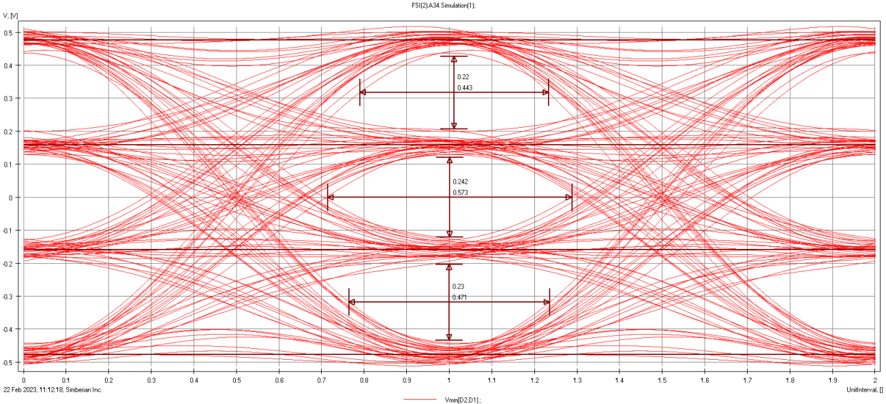

TP R305 : Analyse et Simulation des Chaînes de Transmission Numérique
Étude pratique et simulation des fondements de la transmission numérique, incluant l'analyse spectrale des signaux modulés, la quantification des performances (BER/RSB), et la modélisation d'une chaîne émetteur-récepteur sous GNU Radio.

1. Le Défi de l'Optimisation des Liaisons Radiofréquences
L'objectif de cette série de TPs était d'assurer la maîtrise des principes régissant la qualité et l'efficacité spectrale d'une communication. Cela impliquait d'analyser l'impact des choix techniques (modulations, codage) et des perturbations physiques (bruit, synchronisation) sur la fiabilité de la transmission.
Objectifs Pédagogiques Clés
- Analyse Spectrale : Maîtriser l'utilisation de l'Analyseur de Spectre pour interpréter les signaux RF (Fréquence, Puissance, Largeur de bande).
- Performance du Canal : Comprendre l'impact du Bruit et du Rapport Signal sur Bruit (RSB) sur le Taux d'Erreur Binaire (TEB/BER).
- Codage en Ligne : Étudier les codes en ligne (NRZ, RZ, Manchester) et leurs propriétés spectrales.
- Diagnostic de Qualité : Analyser le Diagramme de l'Œil pour évaluer l'effet des perturbations et l'Interférence Inter-Symbole (IIS).
- Simulation Réelle : Simuler une chaîne de transmission complète (émetteur-récepteur) à l'aide de l'outil GNU Radio.
2. La Solution Technique & Méthodologie
La démarche a combiné l'expérimentation sur du matériel de laboratoire spécialisé avec la modélisation logicielle, offrant une double validation des concepts.
Phase 1 : Mesures physiques et Instrumentation
- Analyseur de Spectre : Réglage (RBW, VBW, Span) et lecture des spectres de signaux modulés (ASK, FSK).
- Oscilloscope : Observation des signaux temporels et du Diagramme de l'Œil pour quantifier la distorsion.
- Générateur de Taux d'Erreur : Mesure directe du TEB en fonction de l'atténuation et du bruit injecté.
Phase 2 : Simulation GNU Radio
- GNU Radio : Conception de *flowgraphs* pour simuler une chaîne de communication numérique.
- Modélisation de Canal : Intégration de blocs de Bruit Additif Gaussien (BGA) pour simuler des conditions réelles.
- USRP/SDR (Software Defined Radio) : Mise en œuvre potentielle d'un émetteur-récepteur réel/simulé (TP 5-2).
3. Validation & Compétences Acquises
La réussite des TPs a permis de valider une compréhension technique approfondie du fonctionnement interne des systèmes de communication sans fil, un atout majeur dans le domaine des Télécommunications.
Bénéfices Techniques Confirmés
- Analyse Spectrale Avancée : Capacité à analyser et interpréter le comportement fréquentiel d'un signal, essentiel pour l'allocation de ressources et la conformité réglementaire.
- Évaluation de la Qualité : Maîtrise des concepts de TEB et RSB pour dimensionner une liaison radio et garantir une qualité de service (QoS) minimale.
- Ingénierie des Signaux : Compréhension de la relation entre les codes en ligne, l'occupation spectrale et la synchronisation.
- Compétences SDR/GNU Radio : Capacité à prototyper et débugger des chaînes de communication de manière logicielle, compétence clé pour l'innovation en R&D Télécom.
Leçons Apprises
J'ai appris à passer de la théorie (équations mathématiques des modulations) à la pratique (lecture des spectres réels) et à la simulation. L'interprétation du Diagramme de l'Œil s'est avérée être un outil puissant de diagnostic pour identifier les problèmes de filtrage et de dispersion dans le canal.